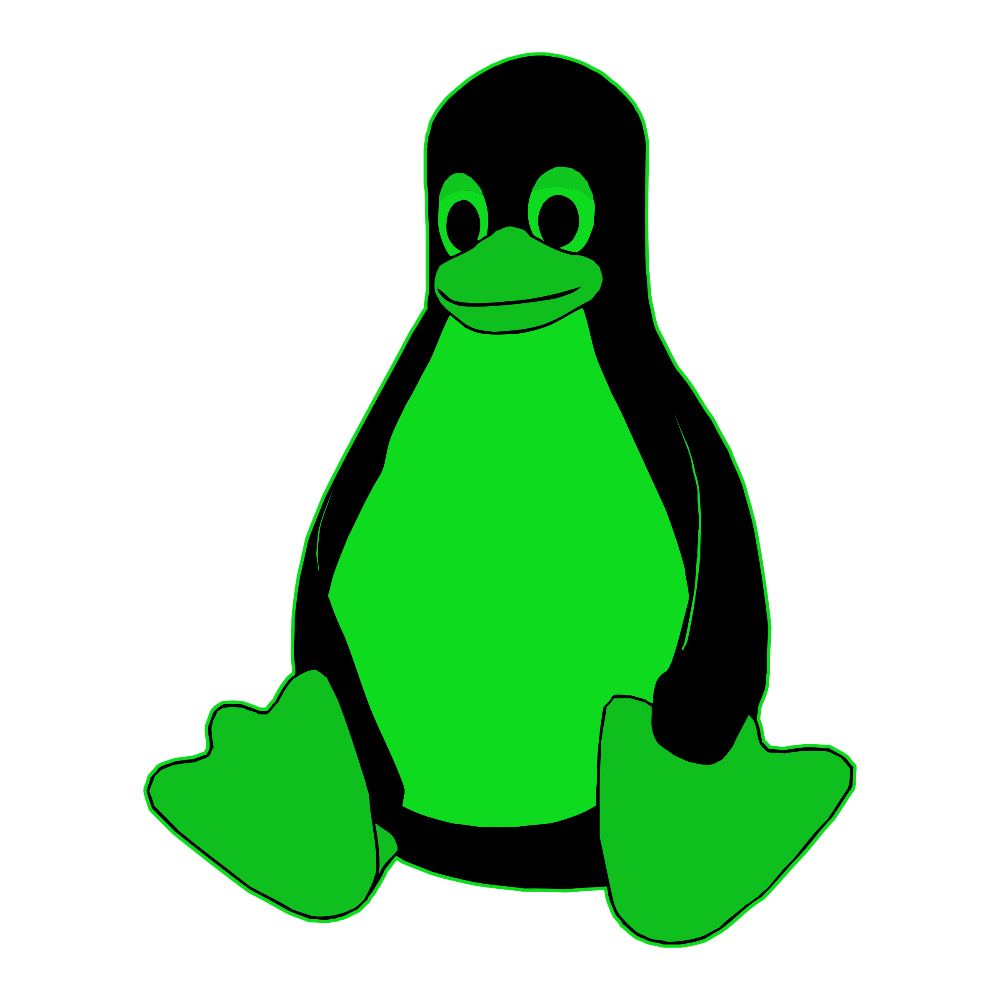

Bash is the command line language used in all Linux operating systems and if you are looking to learn ethical hacking or penetration testing, then learning bash is said to be the first step.
We provide a safe and beginner level capture the flag game
environment for our users.
Each challenge contains a flag that must be
captured to progress onto the next.
We strive to provide efficient support when using our services, anywhere from website issues to server connection. Feel free to contact us using the button below.